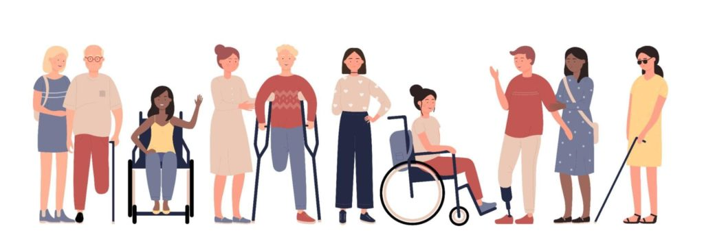

What is Universal Design?
Universal design is about making things like websites, buildings, or products that work well for everyone, no matter who they are or what challenges they might face. It's all about creating things in a way that's easy to use and understand for people of different ages, abilities, and backgrounds. Specifically in web design, universal design means building websites that are easy to access and navigate, ensuring that everyone, including those with disabilities, can use them without any trouble. The main goal of universal design is to make sure that everything is fair and accessible for everyone, no matter their differences.
